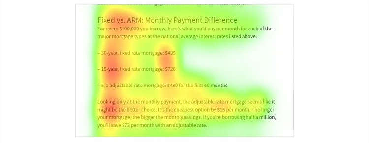

People Don’t Read Online—They Scan. This Is How to Write for Them
9 eye-scanning patterns, 10 ways to adapt the text for max readability.
Amish Letter Writer by Horace Pippin
We write texts for different purposes, but there’s one thing we all have in common—we write online.
On the web, things work a little bit awkwardly. You may have already learned from companies’ writing style guides or articles here on Medium that the following factors help retain readers’ attention:
- Keeping paragraphs short
- Combining shorter and longer sentences
- Using bullet points
- Adding relevant illustrations
The problem is, applying writing ‘lifehacks’ blindly is not the way to go.
Doctors learn the structure of the human body before treating it. Writers must learn how human eyes work to get people to devour the content. Let’s look at how people read nowadays to learn how to write for them.
The scientific base of this article
The Nielsen Norman Group, one of the most prominent user experience research companies, has something to say about how people read online. This article is based on their eye-tracking experiment data.
The concept of ‘scanning’
What’s scanning? It’s when people quickly glance through words, phrases, headings, or sections of pages.
People are more likely to scan your digital content and not read it. That’s not your fault. You might be the next Leo Tolstoy writing ‘Anna Karenina 2.0’, but the internet is merciless regarding texts.
NN Group found out that 79% of people constantly scan any new page they come across. Only 16% of people read every word on a page.
Scanning is searching. Reader’s behavior when scanning may seem pure laziness, but it’s not. It’s an efficient strategy to seek out and filter information. Scanning also allows readers to avoid informational overload.
How to tell if you’re scanning?
- The eye fixates on some words but not entire lines of text.
- You are processing content in a non-linear way (skip parts to find the juicy information you need).
- You’ll most probably scan through this text. I’m okay with it. Totally.
The 9 scanning patterns
As far as I know, NN specialists were the first to discover and research scanning patterns. They put cameras on peoples’ heads and monitored how they visually perceive digital pages with text and images. It’s like using Hotjar but for the eyes. So below are the most common eye-scanning patterns they found.
1. F-pattern
If we read from left to right, we scan text like this:
We look at the first words in every line of text and often look at more words per line in earlier lines. As we move down the page, we read fewer and fewer words on each line and only the words closest to the left:
The F-pattern by Nielsen Norman Group
In languages where we read from right to left, like Arabic, the F-pattern is mirrored:
Eyetracking on the page in Arabic by Nielsen Norman Group
2. Layer cake pattern
Often, people only read / search / scan subheadings (h2):
Layer cake pattern by NN Group
This reading pattern helps find and identify the page’s topics. People read sections that are useful to them and ignore segments of texts with non-informative headings.
Layer cake pattern by NN Group
Concise, informative subheadings help readers find information quickly and maintain focus throughout the long text. So, making subheadings clear is more helpful than making them fun or smart.
3. Spotted pattern
Readers sometimes scan for keywords:
Spotted pattern by NN Group
Here, for example, a person searched for and looked at numbers mostly:
Spotted pattern by NN Group
Spotting pattern is proof that scanning patterns are not random. We all subconsciously search for key information when reading on the web. There is no such thing as reading articles for pleasure (unless it’s New Yorker).
4. Commitment pattern
A rare gem. If you are interested in a certain subheader (h2), you’ll read the whole text under it:
Commitment pattern by NN Group
The pattern implies people read all lines under a section of interest (another reason to make subheadings relevant).
Yeah, I should’ve mentioned it earlier—it’s really important—but I’ll hide this fact here for ‘committed’ writers only. When people read online, they don’t just scan—they search for answers. They do not read for pleasure but to find the information to resolve a task they have in mind. How to make cookie dough? Why am I so fixated on other’s people opinions? When was Elizabeth II born? Questions, questions… The text must provide answers.
OK, the commitment pattern. It only happens when readers find a section directly related to their task, topic, or interest. Common with cooking recipes. The reader can stop scanning after finding the correct info or stay wandering a bit more.
Commitment pattern by NN Group
The commitment pattern has no negative emotions related to it, unlike its sibling, the exhaustive review pattern.
5. Exhaustive review pattern
Students who study for exams read pages in this pattern. Copywriters who read other copywriters’ test tasks also read them like this:
Exhaustive review pattern by NN Group
An exhaustive review is never good, although looks cute in theory. It requires a lot of energy and going back and forth amidst the lines. The exhaustive review takes place when:
- The text is difficult to process but needs to be read for external reasons (like an exam)
- The topic of the text is above the reader’s level of expertise
- The information is missing, but readers hope to find it (like in poorly written FAQs and instructions)
Exhaustive review pattern by NN Group
Readers often struggle to find or consume the information written. They have to backtrack a lot more than in the commitment pattern. The exhaustive pattern is a source of frustration and disappointment.
6. List bypassing pattern
Happens when the reader skips text to read only the list:
List bypassing pattern by NN Group
List bypassing also means that readers will miss the first words of each line if they are very similar:
List bypassing pattern by NN Group
NN Group states that readers often skip “why” and “how” when scanning lists of frequently asked questions.
7. Section bypassing pattern
Readers can also skip over entire sections of the page:
List bypassing pattern by NN Group
It often happens to texts with low value. Section bypass looks like F-pattern with the exception that readers barely glance at lines:
List bypassing pattern by NN Group
8. Lawnmower pattern
This one is less about text and more about website content as a whole. If the page is divided into cells of content—images, videos, texts—our eyes move in a lawnmower pattern (yes, like when you mow the grass):
Lawnmower pattern by NN Group
The following Apple Watch page is the perfect example of how ‘cells’ of content look and represent the lawnmower pattern:
Lawnmower pattern by NN Group
9. Zigzag pattern
This pattern occurs on pages with text and small text excerpts/images on the side:
Zigzag pattern by NN Group
Why do people scan zigzagging? They are either attracted by images or confused by the text/them.
Zigzag pattern by NN Group
The 10 ways to adapt the text for max readability
Based on my personal experience and the structure of the eye, I would recommend the following 10 ways to adapt content to scanning:
- Use headings and subheadings that relate to the content of the text. Make it easier for people to find stuff, and they will be thankful.
- Front-load (use as the 3 first words) the central message of the sentence/bullet point. Remember the F-pattern.
- Use bold font for keywords or highlight them in other ways. But don’t overuse it because it makes people confused. If you highlight everything, nothing stands out.
- Bulleted lists work! Unfortunately, only if there are less than 4–5 bullet points.
- Using simple language also works, and now you know why: aim the text towards the audience with minimum expertise so that more people read it. It also reduces the need to backtrack (which is exhausting).
- Don’t overdo the introduction. This is my vice, too… Move on to essential, structured, informative, concise blocks quickly. Long introductions are a sign that you can’t say much further on.
- Use the inverted pyramid style. It means putting the most important info in the beginning (the who, what, when, where, and why). Then follow it up with any details and personal experience, and finally, put the least important stuff (like opinions) at the very end. Or do the recap of the most essential article’s points; that also works. Like this, here? This is merely a recap of the patterns above.
- Use numerals if your potential reader will search for a number. So, if the article is about cheetahs, maybe write that their max speed starts at ‘eighty km/h’ as a number—80 km/h.
- Add verbs. Coming from my own experience. Sentences with verbs are simpler to rid. Also, don’t be like me and use Infinitive more than Gerund.
- Research the topic. Do your bloody research. Wishy-washy texts are meh. People come for information, not to admire your writing style. Make sure to fact-check with solid sources because your reputation is at stake.
Did you find this article helpful? Do you know of any other tips to make the texts more readable?